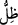

GÖLGEYİ NASIL UZATTIĞINI
GÖRMEDİN Mİ?
45. Rabbinin gölgeyi nasıl uzattığını görmedin mi? Eğer dileseydi, onu elbet
hareketsiz kılardı. Sonra biz güneşi, ona delil kıldık.
46. Sonra onu (uzayan gölgeyi) yavaş yavaş kendimize çektik (kısalttık).
47. Sizin için geceyi örtü, uykuyu istirahat kılan, gündüzü de dağılıp çalışma
(zamanı) yapan, O’dur.
48-49. Rüzgârları rahmetinin önünde müjdeci olarak gönderen O’dur. Biz, ölü
toprağa can vermek, yarattığımız nice hayvanlara ve nice insanlara su vermek için
gökten tertemiz su indirdik.
“Rabbinin gölgeyi nasıl uzattığını görmedin mi?” Hitap Rasûlullah (s.a.)’edir.
Âyetteki soru pekiştirmek içindir. Görme (rü’yet) fiili, gözle görmek anlamındadır. Yâni
Allah Teâlâ’nın eşsiz sanatına bakmadın mı? demektir. Çünkü bakılan şeyin gözle
görülebilir bir şey olması gerekir.
“__WORD__ kelimesinin asıl anlamı çekip uzatmak demektir. Yayılıp uzatılmış vakite
“müddet” denilmesi de buradandır. “__WORD__ ise güneş gibi bizzat aydınlatan veya ay gibi
dolaylı olarak aydınlatan bir cisimden hâsıl olan şey demektir. el-Müfredât’ta der ki: “__WORD__, güneş ve güneşin ışığının zıddıdır.” Nitekim el-Kâmus’ta da böyle geçmektedir. “__WORD__ kelimesi aynı mânâdaki “__WORD__ kelimesine göre daha kapsamlıdır. Çünkü “
gecenin gölgesi, cennetin gölgesi” denilir. Güneşin ulaşamadığı her yere “__WORD__ denilir fakat “__WORD__ denilmez. Güneş zevâl vaktine kadar gölgeyi yavaş yavaş
giderir, izâle eder. Sonra gölge zevâl vaktinden gurûb vaktine kadar güneş ışığını siler
ve yok eder. İşte artmaya devam eden, güneşin ışığını ortadan kaldıran gölgeye “__WORD__
denir. Çünkü gölge doğu taraftan batı tarafa yönelmiştir. “__WORD__ zevâl vaktinden güneşin